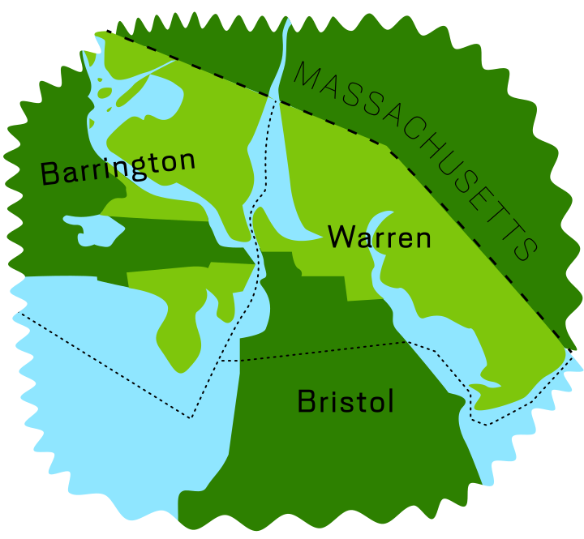

* Our state congressional districts fairly
Let’s Redraw* R.I!
Let’s Redraw* R.I!
Yes, we have a gerrymandering problem here in Rhode Island. Those in power who draw districts tend to do so to favor themselves and their political allies.
At least nine states now use an independent redistricting commission to draw state or federal maps.
We are proposing Rhode Island create an independent commission to draw our federal and state congressional districts.
How redistricting works now in Rhode Island
Since 2001 Rhode Island has redistricted using a hybrid commission created by the General Assembly. In 2011 that eighteen (18) member commission included twelve (12) legislators, eight (8) from the Democratic Party and four (4) from the Republican Party. The remaining six (6) members of the commission were drawn from the public, but included a registered lobbyist, and two Democratic Party officials. That commission produced maps (with technical assistance from a consultant hired and paid by the General Assembly) that were then submitted to the General Assembly for adoption.
Other measures of partisan gerrymandering include “partisan bias” and “mean-median.” d By each of those measures in 2002, 1992, 1982, and 1972, Rhode Island maps suffered from partisan gerrymanders.
The problem
Social scientists have produced numerous measures to quantify partisan gerrymandering. The leading measure is known as the “efficiency gap.” It is a measure of number of “wasted votes” that are cast for candidates who did not win, or in excess of the number needed to win for the winning candidate. An analysis by Nicholas Stephanopolis and Eric McGee found that using the efficiency gap, Rhode Island’s 2012 House of Representative plan is the most partisan gerrymandered in the United States.
Ways it has gone wrong
District issues
-

Not Contiguous
Current House District 67 (shown above in lime green) is neither contiguous, nor compact. The boundary jumps over natural dividers to include non-contiguous parts of Barrington while putting part of Warren with Bristol in District 68. See area in Google Maps.
-

Not compact
Senate 35 represents "compactness" or the lack thereof
-
Separating communities of interest
House 69 represents not maintaining communities of interest because it puts Prudence Island with a district composed primarily of Bristol
-
Keeping communities of interest
Senate 6 was created to join the historically African-American neighborhood of Mt. Hope with a predominantly African-American section of South Providence
-
Rocco’s Robots
In 1981 Senate Majority Leader Rocco Quattrocchi (D-Providence) sought to punish both Republican stalwart Lila Sapinsley (R-Providence) and fellow Democratic “maverick” Senator Richard Licht (D-Providence) by combining their East Side districts. Bucking his party Licht joined Sapinsley in suing to overturn the new districts. When the three-judge panel of the federal court ruled to overturn the maps they wrote, “The only plausible explanation [for the maps are] to preserve the senatorial seats of incumbents favorable to the Democratic leadership and punish incumbents critical of the leadership.”
-
Keablemander

Senator Paul Kelly (D-North Smithfield) was the Majority Leader, the most important position in the state Senate. But just a year after losing that position he found himself on the wrong end of a political gerrymander. His old district contained all of his home community of North Smithfield and part of Woonsocket. Because of gerrymandering he was left with just one-tenth of his former district. The new lines split North Smithfield in half, with the border literally down the middle of the street in front of his house.
We propose an independent commission
Our proposal puts a constitutional amendment on the ballot in November 2020. Should voters approve that amendment it would create an independent redistricting commission (IRC) beginning in 2021. That IRC would be given sole authority to draw new maps for Rhode Island’s two congressional districts (should we retain both) as well as the General Assembly.
The Commission would use the following criteria
- The U.S. Constitution
- Equal population
- The Voting Rights Act
- Geographic contiguity
- Partisan fairness
- Communities of interest
- Compactness
- Not favoring or discriminating against incumbents
And not …
- Punishing political enemies
- Favoring political allies
- Eliminating competition in future elections
- Eliminating the need to be responsive to voters
animated graphic goes here
Redistricting timeline
April 1, 2020 -- Census Day July 31, 2020 -- Census enumeration concludes November 3, 2020 -- Independent Redistricting Commission proposal on the ballot December 31, 2020 -- U.S. Census Bureau delivers population estimates the the President -- Rhode Island finds out whether we retain two congressional districts January 1, 2021 -- Independent Redistricting Commission amendment take effect January - February 2021 -- General Assembly passes enabling statute for redistricting commission March 2021 -- U.S. Census Bureau sends P.L. 94-171 to the states May 1, 2021 -- Deadline for appointments to Independent Redistricting Commission January 1, 2022 -- Deadline for Independent Redistricting Commission to adopt final plans June 2022 -- Filing deadline for office based on new maps September 2022 -- First primary elections based on new maps November 2022 -- First general election based on new maps